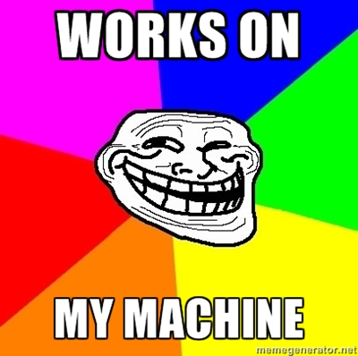

Your browser doesn't support the features required by impress.js, so you are presented with a simplified version of this presentation.
For the best experience please use the latest Chrome, Safari or Firefox browser.

Problems
Multiple devs, projects & machines
- ✘ Bootstrap time
- ✘ Replicate changes
- ✘ Healthy coexistence
- ✘ Share envs
- ✘ Backup envs
First Step: VirtualEnv
virtualenv is a tool to create isolated Python environments.
$ virtualenv venv
$ source venv/bin/activate
$ pip install Django
...
$ deactivate
- + Reproducible python environments
- + Isolated python environments
- - Only python packages
Setup Env: Puppet
puppet helps system administrators manage infrastructure throughout its lifecycle,
from provisioning and configuration to patch management and compliance.
$ puppet apply dev.pp
- + Used with any type of packages
- + Reproducible environment
- + Documented configuration
- - Learn Puppet
- - No coexistence
Isolated Env: Vagrant
vagrant Create and configure lightweight, reproducible,
and portable development environments.
$ vagrant up
- + Isolated environment
- + Shareable environment
- - Performance
- - Configuration
Vagrant Puppet
Vagrant::Config.run do |config|
config.vm.host_name = "dev_on_production"
config.vm.box = "precise64"
config.vm.box_url = "http://files.vagrantup.com/precise64.box"
config.vm.forward_port 80, 8000
config.vm.share_folder "project", "/opt/devpro/source", "../."
config.vm.provision :puppet do |puppet|
puppet.manifests_path = "puppet"
puppet.module_path = "puppet/modules"
puppet.manifest_file = "dev.pp"
puppet.options = "--verbose --debug"
end
end
$ vagrant provision
Remote update? Fabric
fabric is a Python library and command-line tool for streamlining the use of SSH for application deployment or systems administration tasks.
from fabric.api import run, env
env.hosts = ['srv01.devpro.sophilabs.com', 'srv02.devpro.sophilabs.com']
env.user = 'devpro'
def list():
run('ls')
$ fab list
Pro
Puppet
VirtualEnv
App
Fabric
Performance?
Summary
- ✔ Bootstrap time
vagrant + puppet
- ✔ Replicate changes
fabric + puppet
- ✔ Healthy coexistence
vagrant
- ✔ Share envs
vagrant
- ✔ Backup envs
vagrant
- ✔ Easy debugging
pycharm or pydev
- ✔ Rapid development
SSD